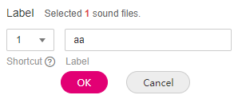
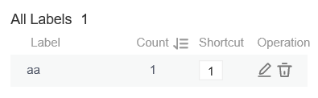

Model training requires a large amount of labeled data. Therefore, before the model training, label the unlabeled audio files. ModelArts enables you to label audio files in batches by one click. In addition, you can modify the labels of audio files, or remove their labels and label the audio files again.
Starting Labeling
- Log in to the ModelArts management console. In the left navigation pane, choose Data Management > Datasets. The Datasets page is displayed.
- In the dataset list, select the dataset to be labeled based on the labeling type, and click the dataset name to go to the Dashboard tab page of the dataset.
By default, the Dashboard tab page of the current dataset version is displayed. If you need to label the dataset of another version, click the Versions tab and then click Set to Current Version in the right pane. For details, see Managing Dataset Versions.
- On the Dashboard page of the dataset, click Label in the upper right corner. The dataset details page is displayed. By default, all data of the dataset is displayed on the dataset details page.
Synchronizing the Data Source
ModelArts automatically synchronizes data and labeling information from Input Dataset Path to the dataset details page.
To quickly obtain the latest data in the OBS bucket, click Synchronize Data Source on the Unlabeled tab page of the dataset details page to add the data uploaded using OBS to the dataset.
Labeling Audio Files
The dataset details page displays the labeled and unlabeled audio files. The Unlabeled tab page is displayed by default. Click on the left of the audio to preview the audio.
- On the Unlabeled tab page, select the audio files to be labeled.
- Manual selection: In the audio list, click the target audio. If the blue check box is displayed in the upper right corner, the audio is selected. You can select multiple audio files of the same type and label them together.
- Batch selection: If all audio files of the current page belong to one type, you can click Select Images on Current Page in the upper right corner of the list to select all the audio files on the page.
- Add labels.
- In the right pane, set a label name in the Label text box.
Method 1 (the required label already exists): In the right pane, select a shortcut from the Shortcut drop-down list, select an existing label name from the Label text box, and click OK.
Method 2 (adding a label): In the right pane, select a shortcut from the Shortcut drop-down list, and enter a new label name in the Label text box.
- The selected audio files are automatically moved to the Labeled tab page. On the Unlabeled tab page, the labeling information is updated along with the labeling process, including the added label names and the number of audio files corresponding to each label.

Shortcut key description: After specifying a shortcut key for a label, you can select an audio file and press the shortcut key to add a label for the audio file. Example: Specify 1 as the shortcut key for the aa label. Select one or more files and press 1 during data labeling. A message is displayed, asking you whether to label the files with aa. Click OK.
Each label has a shortcut key. A shortcut key cannot be specified for different labels. Shortcut keys can greatly improve the labeling efficiency.
Figure 1 Adding an audio label
 - In the right pane, set a label name in the Label text box.
Viewing the Labeled Audio Files
On the dataset details page, click the Labeled tab to view the list of the labeled audio files. Click an audio file. You can view the label information about the audio file in the File Labels area on the right.
Modifying Labels
After labeling data, you can modify labeled data on the Labeled tab page.
- Modifying based on audio
On the data labeling page, click the Labeled tab. Select one or more audio files to be modified from the audio list. Modify the label in the label details area on the right.
- Modifying a label: In the File Labels area, click the edit icon in the Operation column, enter the correct label name in the text box, and click the check mark to complete the modification.
- Deleting a label: In the File Labels area, click the delete icon in the Operation column to delete the label.
- Modifying based on labels
On the dataset details page, click the Labeled tab. The information about all labels is displayed on the right.
Figure 2 Information about all labels
- Modifying a label: Click the editing icon in the Operation column. In the dialog box that is displayed, enter the new label name and click OK. After the modification, the new label applies to the audio files that contain the original label.
- Deleting a label: Click the deletion icon in the Operation column. In the displayed dialog box, select the object to be deleted as prompted and click OK.
Adding Audio Files
In addition to automatically synchronizing data from Input Dataset Path, you can directly add audio files on ModelArts for data labeling.
- On the dataset details page, click the Unlabeled tab. Then click Add Audio in the upper left corner.
- In the Add Audio dialog box that is displayed, click Add Audio.
Select the audio files to be uploaded in the local environment. Only WAV audio files are supported. The size of an audio file cannot exceed 4 MB. The total size of audio files uploaded at a time cannot exceed 8 MB.
- In the Add Audio dialog box, click OK.
The audio files you add will be automatically displayed on the Unlabeled tab page. In addition, the audio files are automatically saved to the OBS directory specified by Input Dataset Path.
Deleting Audio Files
You can quickly delete the audio files you want to discard.
On the Unlabeled or Labeled tab page, select the audio files to be deleted one by one or tick Select Images on Current Page to select all audio files on the page, and then click Delete File in the upper left corner. In the displayed dialog box, select or deselect Delete source files as required. After confirmation, click OK to delete the audio files.
If a tick is displayed in the upper right corner of an audio file, the audio file is selected. If no audio file is selected on the page, the Delete File button is unavailable.
If you select Delete source files, audio files stored in the corresponding OBS directory will be deleted when you delete the selected audio files. Deleting source files may affect other dataset versions or datasets using those files. As a result, the page display, training, or inference is abnormal. Deleted data cannot be recovered. Exercise caution when performing this operation.